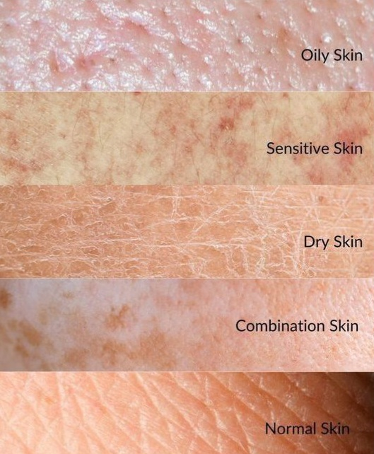

Hi there, welcome to Your Skincare!
Here I'll accompany you on your skincare journey where you'll discover more about your skin type and how to take care of it 😊
Now if you're ready, please enter your name down here to start this trip!
Hi !
First of all, let's talk a little about skin types — what they are, their characteristics, and how to know your type,
in order to set your skincare routine.
So first you have to know that there are 5 basic skin types:
Normal skin
Oily skin
Dry skin
Combination skin
sensitive skin
And thera are their main characteristics:
🌿Normal skin:
This type is known for balanced oil and moisture levels, so it's not too shiny or too dry.
Also, it has a smooth texture and rarely breaks out.
💧Oily skin:
It has a shiny appearance especially in the T-zone, enlarged pores, and frequent blackheads or pimples.
Also, you remark that your makeup wears off quickly, and it has a greasy feeling.
🧴Dry skin:
It feels tight or rough, has flaky or scaly patches, fine pores that are hard to see, and a dull look.
🔁Combination skin:
It's oily in the T-zone (forehead, nose, chin), with dry or normal cheeks.
It breaks out in oily areas, which makes it have an uneven texture and need targeted care in different zones.
🎀Sensitive skin:
This type is easily irritated. It may have redness, stinging, or burning with some products.
It may react to weather, fragrances, or even water — which makes it need gentle, calming care.
So now the question is: How to know your skin type?
If you already know your skin type you can tell me so you can start your skin care now !
And if you don't know itt already, don't worry, I'll help you discovering that😊
all you need is doing the type test and I'll tell you about your skin type!

Welcome to the skin type test🌸😊!
Here are some questions you can answer them so i can tell you more about your skin type:
You can also do the bare-face test.
first of all you need to wash your face with a gentle cleanser, then pet dry gently with a towel, and leave your skin bare (no moisturizer or product)
and wait 1 hour then go to a mirror and check the result.
And you can tell me your skin type depending on that;
🌿 Normal: Skin feels smooth, not shiny or tight. No dry flakes or oil spots.
💧 Oily: Forehead, nose, and cheeks look shiny or feel greasy.
🧴 Dry: Skin feels tight, rough, or has flakes, especially on cheeks.
🔁 Combination: T-zone is oily, but cheeks are dry or normal.
🎀 Sensitive: Skin may look red, feel itchy, or sting during the hour.
your skin type is normal skin!
🌿Welcome to the normal skin routine😊
If you have normal skin, that means your skin is naturally well-balanced—not too oily, not too dry. It's smooth, clear, and not too sensitive.
But even normal skin needs daily care to stay healthy, glowing, and protected from sun, pollution, and aging. Here's a simple and effective routine
to keep your skin at its best—without overcomplicating things
☀️Morning routine:
Cleanser:
🧼 Use a gentle, water-based cleanser to remove oil and sweat from sleep.
🔸 Example: Gel or foam cleanser (no alcohol or harsh ingredients).
Toner (Optional):
💧 Helps refresh the skin and balance ph
🔸 Look for hydrating or soothing toners (like rose water or glycerin-based).
Serum (Optional):
✨ Lightweight formulas with active ingredients.
🔸 A Vitamin C serum helps brighten the skin and protect from sun damage.
Moisturizer:
🧴 Keeps skin hydrated all day.
🔸 Choose a lightweight, non-greasy formula with ingredients like hyaluronic acid or glycerin.
Sunscreen (Very Important):
☀️ Protects from UV damage and aging.
🔸 Use SPF 30 or higher, even if you're indoors most of the day
🌙Night routine:
Cleanser:
🧼 Double cleanse if you wore sunscreen or makeup:
1st: Oil cleanser or micellar water.
2nd: Gentle face cleanser
Toner:
💧 Same as morning or a more hydrating version at night.
Serum (Optional):
🌙 At night, you can use hydrating (hyaluronic acid), repairing (niacinamide), or anti-aging (retinol) serums.
âš ï¸ Start slow with actives like retinol (2–3 times a week).
Moisturizer:
🧴 Night creams can be a bit richer to help repair the skin overnight.
🔸 Look for peptides or ceramides.
🧽Weekly Extras:
Exfoliate 1–2 times/week:
🔸 Use a gentle scrub or chemical exfoliant (like AHA/BHA) to remove dead skin
Face Mask 1–2 times/week:
🔸 Hydrating masks (like sheet masks) or clay masks if you want to feel extra clean.
And here are some natural recipes for normal skin 💧🌿🍯:
2. Banana + Honey Mask:
Ingredients:
½ ripe banana.
1 teaspoon honey.
Effect:
🌠Moisturizes and softens the skin. Great for glow and a smooth texture.
3. Avocado + Olive Oil Mask:
Ingredients:
¼ ripe avocado.
1 teaspoon olive oil.
Effect:
🥑 Deep hydration and nourishment. Perfect for soft, plump skin.
💅🻠Masks application:
1.Wash your face and dry it.
2.Apply mask with clean fingers or a brush—thin, even layer.
3.Avoid eyes and lips.
4.Leave for 15–20 mins.
5.Rinse with lukewarm water and pat dry.
6.Moisturize after.
your skin type is oily skin!
💧Welcome to the oily skin routine😊
If you have oily skin, your face may feel greasy during the day, especially in the T-zone (forehead, nose, chin).
You might also notice large pores, blackheads, or occasional acne. This happens when your skin produces too much sebum
(natural oil). But with the right routine, oily skin can stay clear, fresh, and balanced—without stripping it dry.
Here’s a simple routine to help control oil and keep your skin healthy and shine-free
🌠Morning Routine:
Cleanser:
🧼 Use a foaming or gel cleanser that removes excess oil without drying.
🔸 Look for ingredients like salicylic acid, tea tree, or niacinamide.
Toner:
💧 Balances oil and tightens pores.
🔸 Choose alcohol-free formulas with witch hazel, green tea, or rose water.
Serum (Optional):
✨ Lightweight serums that help control oil and reduce acne.
🔸 Try niacinamide, zinc, or vitamin C. Moisturizer:
🧴 Even oily skin needs hydration!
🔸 Use oil-free, non-comedogenic gel or water-based moisturizers (like aloe vera or glycerin).
Sunscreen (Essential):
☀️ Protects your skin without clogging pores.
🔸 Choose matte finish, gel-based, or mineral sunscreens with SPF 30+.
🌙Night routine:
Cleanser:
🧼 Double cleanse if you wore sunscreen or makeup.
1st: Micellar water or gentle cleansing oil.
2nd: Foaming cleanser with acne-fighting ingredients (like salicylic acid).
Toner:
💧 Helps reduce oil and tighten pores overnight.
🔸 Can be the same as morning or a slightly stronger one (but still alcohol-free).
Serum (Optional)
🌙 Use lightweight serums that fight oil and acne.
🔸 Niacinamide, retinol, or AHA/BHA (use exfoliating serums only 2–3x/week).
Moisturizer:
🧴 A light, oil-free night gel or lotion.
🔸 Look for ingredients like green tea, centella, or aloe.
🧽Weekly Extras:
• Exfoliate (1–2 times/week):
🔸 Use a chemical exfoliant (like salicylic acid or glycolic acid) to unclog pores and reduce shine.
❗ Avoid harsh scrubs that can irritate oily skin.
• Face Mask (1–2 times/week)
🔸 Try clay masks (like kaolin or bentonite) to absorb oil and clean pores.
🔸 Optional: Use charcoal or green tea masks for extra detox.
And here are some natural recipes for oily skin 💧🌿🍯:
1. Yogurt + Lemon Juice Mask,
Ingredients:
1 tablespoon plain yogurt
½ teaspoon fresh lemon juice
Effect:
🋠Controls excess oil and brightens skin. Lemon has astringent properties, and yogurt soothes and gently exfoliates.
2. Clay + Rose Water Mask:
Ingredients:
1 tablespoon kaolin or multani mitti (fuller's earth) clay
Enough rose water to form a smooth paste
Effect:
🧼 Absorbs oil, tightens pores, and purifies skin. Clay draws out impurities while rose water calms the skin.
3. Egg White + Honey Mask:
Ingredients:
1 egg white
1 teaspoon honey
Effect:
🥚 Controls shine, tightens skin, and minimizes pores. Egg white firms the skin while honey provides gentle hydration without making it greasy
💅🻠Masks application:
1.Wash your face and dry it.
2.Apply mask with clean fingers or a brush—thin, even layer.
3.Avoid eyes and lips.
4.Leave for 15–20 mins.
5.Rinse with lukewarm water and pat dry.
6.Moisturize after.
your skin type is dry skin!
🧴Welcome to the dry skin routine😊
If you have dry skin, your face might often feel tight, rough, or flaky—especially after cleansing or during cold weather.
Dry skin happens when your skin doesn’t produce enough natural oils (sebum), leading to dehydration and sensitivity.
But with gentle care and rich hydration, your skin can become soft, smooth, and healthy.
Here’s a simple routine to restore moisture and keep dry skin nourished and glowing
🌠Morning Routine:
Cleanser:
🧼 Use a creamy or hydrating cleanser that cleans without stripping natural oils.
🔸 Look for ingredients like glycerin, hyaluronic acid, or oat extract.
Toner:
💧 Use a hydrating, alcohol-free toner to prep your skin.
🔸 Choose formulas with rose water, chamomile, or aloe vera.
Serum (Optional):
✨ Add deep hydration and glow.
🔸 Try hyaluronic acid, vitamin E, or panthenol (pro-vitamin B5).
Moisturizer:
🧴 Use a rich, creamy moisturizer that deeply nourishes.
🔸 Look for ceramides, shea butter, or squalane.
Sunscreen (Essential):
☀️ Protects from UV rays without drying the skin.
🔸 Choose a hydrating sunscreen with SPF 30+, preferably cream-based.
🌙 Night Routine:
Cleanser:
🧼 Use a gentle, creamy cleanser or an oil cleanser to remove makeup and dirt without drying out the skin.
Toner:
💧 Hydrating toner helps prepare skin for overnight products.
🔸 Use the same as morning, or a slightly richer one.
Serum (Optional):
🌙 Apply a hydrating serum to deeply replenish overnight.
🔸 Best options: hyaluronic acid, peptides, or rosehip oil.
Moisturizer:
🧴 Use a deep night cream or sleeping mask.
🔸 Ingredients to look for: ceramides, niacinamide, or argan oil.
🧽Weekly Extras:
• Exfoliate (1x/week):
🔸 Use a gentle chemical exfoliant (like lactic acid) or a mild scrub.
◠Don’t over-exfoliate—dry skin is sensitive!
• Face Mask (1–2 times/week):
🔸 Use hydrating masks to boost moisture levels.
🔸 Look for ingredients like avocado, honey, oats, or aloe vera.
And here are some natural recipes for dry skin 🥑🍯💧:
1. Avocado + Honey Mask:
Ingredients:
¼ ripe avocado
1 teaspoon honey
Effect:
🥑 Deeply hydrates and softens dry, flaky skin. Avocado is rich in healthy fats, and honey locks in moisture.
2. Yogurt + Oatmeal Mask:
Ingredients:
1 tablespoon plain yogurt.
1 tablespoon ground oats.
Effect:
🌾 Soothes and gently exfoliates. Oats calm irritation, while yogurt moisturizes and smooths skin.
3. Aloe Vera + Olive Oil Mask
Ingredients:
1 tablespoon aloe vera gel.
½ teaspoon olive oil.
Effect:
🃠Soothes, heals, and deeply nourishes. Great for very dry, irritated, or sensitive skin.
💅🻠Masks application:
1.Wash your face and dry it.
2.Apply mask with clean fingers or a brush—thin, even layer.
3.Avoid eyes and lips.
4.Leave for 15–20 mins.
5.Rinse with lukewarm water and pat dry.
6.Moisturize after.
your skin type is combination skin!
🔁Welcome to the combination skin routine😊
If you have combination skin, your face may be oily in the T-zone (forehead, nose, chin) and dry or normal on the cheeks.
You might notice occasional breakouts in the oily areas and dryness or tightness in others. The challenge is balancing both needs
but with the right care, your skin can feel even, fresh, and healthy.
Here’s a simple and balanced routine to help care for both the oily and dry areas of your face:
🌠Morning Routine:
Cleanser:
🧼 Use a gentle gel or foaming cleanser that cleans without drying.
🔸 Look for niacinamide, green tea, or glycerin—ingredients that suit both zones.
Toner:
💧 Refreshes and balances oil.
🔸 Choose alcohol-free toners with witch hazel, rose water, or aloe vera.
Serum (Optional):
✨ Helps target specific areas.
🔸 Use a lightweight serum like vitamin C or niacinamide all over, or apply hydrating serum on dry areas only.
Moisturizer:
🧴 Choose a light moisturizer that hydrates without being greasy.
🔸 Gel or lotion-type for the T-zone, creamier on the cheeks if needed.
🔸 Look for hyaluronic acid, glycerin, or squalane.
Sunscreen (Essential):
☀️ Protects your skin and prevents uneven texture.
🔸 Use a non-greasy, broad-spectrum SPF 30+—gel-based or hybrid formulas are great.
🌙 Night Routine:
Cleanser:
🧼 Use the same gentle cleanser as morning, or double cleanse if you wore makeup or sunscreen. Toner:
💧 Preps your skin for serum and moisturizer.
🔸 You can use the same one from morning or a slightly richer one on drier areas.
Serum (Optional):
🌙 Use a hydrating serum (like hyaluronic acid) on dry areas, and niacinamide or retinol on oily/acne-prone areas.
🔸 Or choose a well-balanced serum suitable for the whole face.
Moisturizer:
🧴 Light night cream or apply different textures on different areas.
🔸 Richer cream on cheeks, lighter gel on T-zone.
🧽Weekly Extras:
• Exfoliate (1–2 times/week):
🔸 Use gentle exfoliants like AHA/BHA to clear pores and smooth skin.
🔸 You can apply exfoliant only on oily areas if your cheeks are sensitive.
• Face Mask (1–2 times/week):
🔸 Try multi-masking:
 – Clay mask on the T-zone to absorb oil.
 – Hydrating mask on cheeks to soothe dryness
🔸 Or choose a balancing mask with both detox + moisture effects.
And here are some natural recipes for combination skin 🌿🍯✨:
1. Honey + Aloe Vera Mask:
Ingredients:
1 teaspoon honey.
1 teaspoon aloe vera gel.
Effect:
🯠Soothes dry areas and controls oil. Aloe calms and hydrates, while honey balances and nourishes.
2. Oatmeal + Yogurt Mask:
Ingredients:
1 tablespoon ground oats.
1 tablespoon plain yogurt.
Effect:
🌾 Gently exfoliates and hydrates. Oats calm dry skin, yogurt helps with oil control and smooth texture.
3. Clay + Rose Water (T-Zone only):
Ingredients:
1 tablespoon kaolin or multani mitti clay.
Enough rose water to form a paste.
Effect:
🧼 Absorbs oil, reduces shine, and clears pores. Perfect for the oily T-zone.
💅🻠Masks application:
1.Wash your face and dry it.
2.Apply mask with clean fingers or a brush—thin, even layer.
3.Avoid eyes and lips.
4.Leave for 15–20 mins.
5.Rinse with lukewarm water and pat dry.
6.Moisturize after.
your skin type is sensitive skin!
🎀Welcome to the sensitive skin routine😊
If you have sensitive skin, your skin might easily react to new products, weather changes, or harsh ingredients.
You may experience redness, burning, itching, or tightness. The key is to keep your routine simple, soothing, and gentle to protect your skin’s barrier and avoid irritation.
Here’s a calming and protective routine to keep your skin comfortable and healthy:
🌠Morning Routine:
Cleanser:
🧼 Use a very gentle, fragrance-free cleanser that doesn’t strip your skin.
🔸 Look for micellar water, creamy cleansers, or ones with oat extract, glycerin, or panthenol.
Toner (Optional):
💧 Only if your skin tolerates it. Use alcohol-free, calming toners.
🔸 Choose rose water, chamomile, or aloe vera toners.
Serum (Optional):
✨ Add only if your skin is used to serums. Use calming ones.
🔸 Try niacinamide, centella asiatica, or hyaluronic acid (low strength).
Moisturizer:
🧴 A rich, soothing moisturizer is essential.
🔸 Go for fragrance-free, hypoallergenic creams with ceramides, squalane, or colloidal oatmeal.
Sunscreen (Essential):
☀️ Protects your skin and prevents irritation from UV.
🔸 Choose mineral (physical) sunscreens with zinc oxide or titanium dioxide, preferably fragrance-free and formulated for sensitive skin.
🌙 Night Routine:
Cleanser:
🧼 Use the same gentle cleanser as in the morning. Avoid over-washing.
Toner (Optional):
💧 Only if your skin is not reactive to it—use the same as morning.
Serum (Optional):
🌙 Use a soothing, hydrating serum if needed.
🔸 Ingredients like panthenol, allantoin, or green tea extract are great.
Moisturizer:
🧴 Apply a richer night cream to support skin repair overnight.
🔸 Look for ceramides, niacinamide (low %), and shea butter.
🧽 Weekly Extras:
• Exfoliate (1x/week MAX):
🔸 Use only very mild exfoliants if needed—like lactic acid or enzyme-based ones.
❗ Avoid scrubs or strong acids that irritate skin.
• Face Mask (1x/week):
🔸 Use calming masks that reduce redness and hydrate.
🔸 Choose ingredients like oatmeal, honey, or aloe vera.
And here are some natural recipes for sensitive skin 🌸🍯🍃:
1. Oatmeal + Honey Mask
Ingredients:
1 tablespoon ground oats.
1 teaspoon honey.
Effect:
🌾 Calms irritation and hydrates. Oats soothe inflammation, and honey has natural healing properties.
2. Aloe Vera + Cucumber Mask
Ingredients:
1 tablespoon aloe vera gel.
1 tablespoon cucumber juice (fresh).
Effect:
🥒 Cools, hydrates, and calms red or irritated skin. Perfect for sun-sensitive or inflamed skin.
💅🻠Masks application:
1.Wash your face and dry it.
2.Apply mask with clean fingers or a brush—thin, even layer.
3.Avoid eyes and lips.
4.Leave for 15–20 mins.
5.Rinse with lukewarm water and pat dry.
6.Moisturize after.